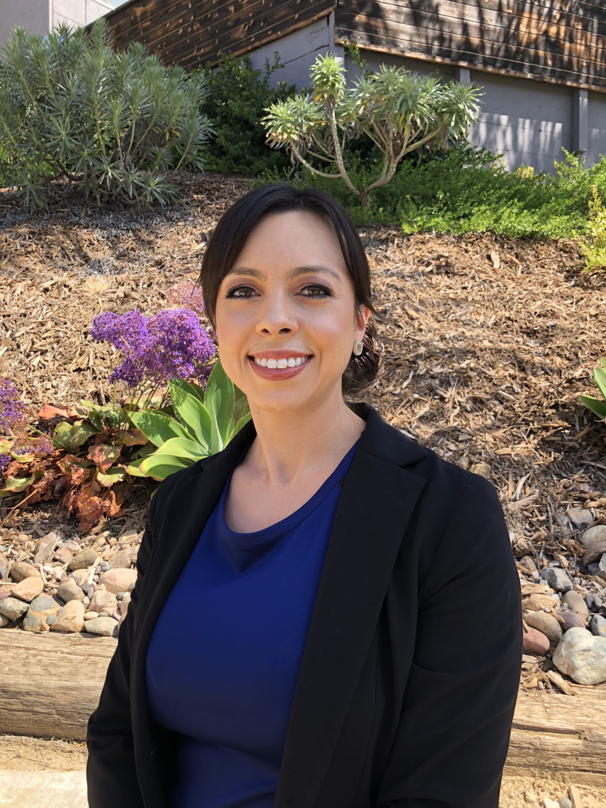

About Me
Hello everyone! My name is Kayla Goldner, and I am currently a UCSD Extension Coding Boot Camp student. My aspiration is to become a full stack web developer, and use these skills to assist others. The majority of my occupational and educational background is composed of the medical field because I truly enjoy helping people. I originally thought that I could only make a difference in the lives of others, by literally saving their lives. I was enlightened by the idea that learning the skills of a full stack web developer could also be used to improve the lives of others by making workflow drastically easier and more efficient.
I have a Bachelor of Science in Human Biology from the University of California San Diego with a minor in psychology. I also have a license as an Emergency Medical Technician. I was not joking when I said that I wanted to help people by literally saving their lives. With this transition, I am also interested in continuing my education in this field by supplementing my studies with UCSD Extension courses as languages go obsolete.